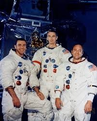

Alan Shepard holds a special place in American space history as the first American to travel into space. In 1961, he flew aboard Freedom 7, becoming a national hero during the early years of the Space Race.
After undergoing treatment for an inner-ear disorder that temporarily grounded him, Shepard returned to active flight status and was selected to command Apollo 14. During the mission, he became the fifth person to walk on the Moon and helped conduct extensive scientific exploration in the Fra Mauro region.
His successful return to space after years away from flight duty demonstrated remarkable determination. Shepard remains remembered as one of the founding figures of American human spaceflight.
Stuart Roosa served as the Command Module Pilot during Apollo 14. While Shepard and Mitchell explored the lunar surface, Roosa remained alone in lunar orbit, conducting scientific observations and managing spacecraft operations.
Before becoming an astronaut, Roosa worked as a smokejumper, parachuting into remote forest fires to help control them. His unique background made him one of the more interesting members of the astronaut corps.
Roosa's work during Apollo 14 ensured that the Command Module remained ready for rendezvous and return operations, making him an essential part of the mission's success.
Edgar Mitchell became the sixth person to walk on the Moon during Apollo 14. A naval aviator and scientist, Mitchell played a major role in the mission's scientific activities and geological investigations.
During two moonwalks, he collected samples, deployed experiments, and explored the lunar surface alongside Shepard. His work contributed to a better understanding of the Moon's geological history.
After leaving NASA, Mitchell became interested in consciousness research and founded organizations dedicated to exploring scientific and philosophical questions. He remains one of the most unique figures in Apollo history.